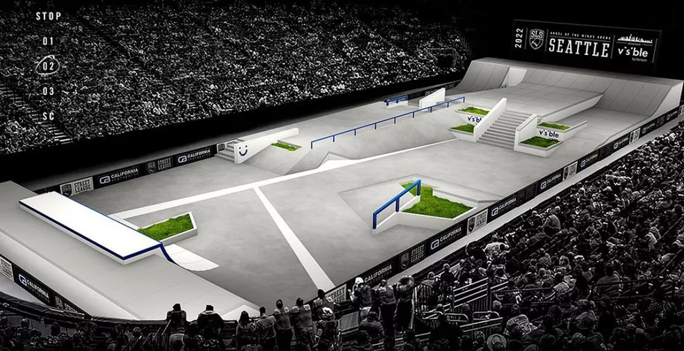
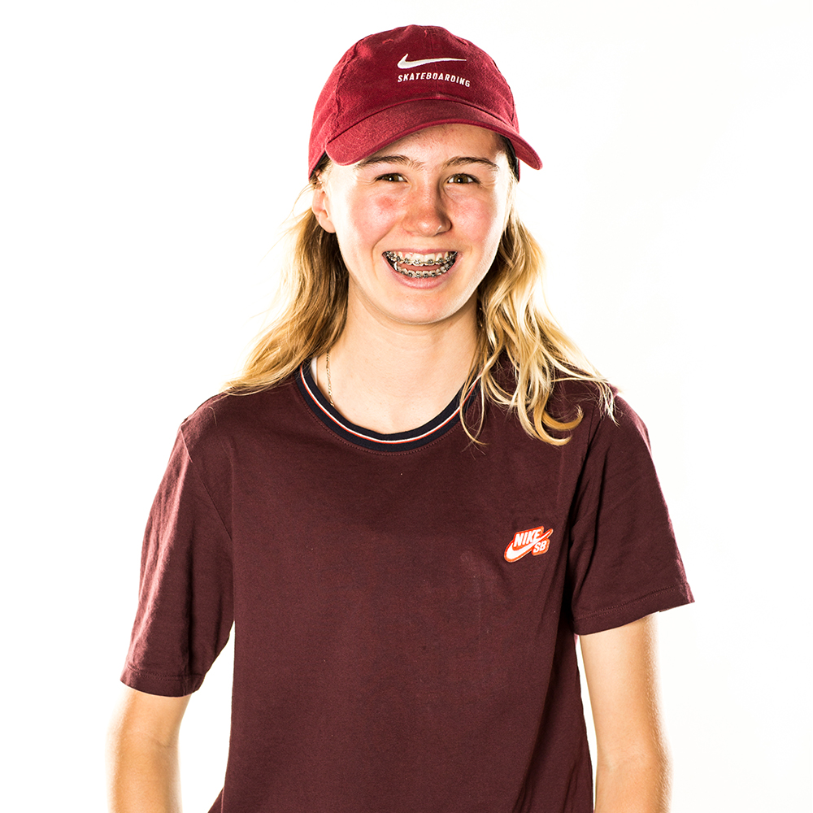

Pistas
Estes foram as classificaçoes do SLS feminino em cada etapa.
Jacksonville
1° - Rayssa Leal
2° - Yumeka Oda
3° - Pamela Rosa
1° - Rayssa Leal
2° - Yumeka Oda
3° - Pamela Rosa

Seattle
1° - Rayssa Leal
2° - Pamela Rosa
3° - Momiji Nishiya
1° - Rayssa Leal
2° - Pamela Rosa
3° - Momiji Nishiya
Las Vegas
1° - Rayssa Leal
2° - Chloe Covell
3° - Poe Pinson
1° - Rayssa Leal
2° - Chloe Covell
3° - Poe Pinson
Rio de Janeiro
1° - Rayssa Leal
2° - Funa Nakayama
3° - Momiji Nishiya
1° - Rayssa Leal
2° - Funa Nakayama
3° - Momiji Nishiya
Atletas Street Feminino
Durante as etapas de 2022, estas foram as atletas e suas melhores notas recebidas.
(Run) = Melhor volta de 45seg. / (Trick) = Melhor manobra.
Funa Nakayama - Japão
Jacksonville: Run 1.3| Trick 6.8Seattle: Run 4.9| Trick 8.0
Las Vegas: Run 6.3| Trick 4.4
Rio de Janeiro: Run 6.1| Trick 7.8
Gabriela Mazetto - Brasil
Jacksonville: Run 4.6| Trick 5.2Seattle: Run 1.8| Trick 3.4
Las Vegas: Run 5.9| Trick 3.7
Rio de Janeiro: Run 5.2| Trick 4.7
Momiji Nishiya - Japão
Jacksonville: Run 6.7| Trick 5.4Seattle: Run 6.0| Trick 8.3
Las Vegas: Run 5.6| Trick 5.6
Rio de Janeiro: Run 5.5| Trick 7.0
Pamela Rosa - Brasil
Jacksonville: Run 8.0| Trick 6.0Seattle: Run 6.4| Trick 7.8
Las Vegas: Run 6.0| Trick 6.5
Rio de Janeiro: Run 6.0| Trick 5.3
Poe Pinson - USA
Jacksonville: Run 6.6| Trick 4.6Seattle: Run 6.0| Trick 7.2
Las Vegas: Run 5.8| Trick 6.2
Rio de Janeiro: Run 5.8| Trick 5.9
Rayssa Leal - Brasil
Jacksonville: Run 7.8| Trick 8.5Seattle: Run 6.5| Trick 8.1
Las Vegas: Run 6.9| Trick 6.9
Rio de Janeiro: Run 6.7| Trick 7.4
Wenhui Zeng - China
Jacksonville: Run ***| Trick ***Seattle: Run ***| Trick ***
Las Vegas: Run 4.3| Trick 5.6
Rio de Janeiro: Run 4.8| Trick 5.6
Yumeka Oda - Japão
Jacksonville: Run 6.3| Trick 9.4Seattle: Run 5.3| Trick 8.4
Las Vegas: Run 4.2| Trick 4.9
Rio de Janeiro: Run 4.9| Trick ***
Marina Gabriela - Brasil
Jacksonville: Run 2.5| Trick 2.7Seattle: Run 2.8| Trick 3.2
Las Vegas: Run 2.5| Trick 4.7
Rio de Janeiro: Run 2.0| Trick ***
Vitoria Mendonça - Brasil
Jacksonville: Run 3.1| Trick 2.7Seattle: Run ***| Trick ***
Las Vegas: Run 1.6| Trick ***
Rio de Janeiro: Run ***| Trick ***
Aori Nishimura - Japão
Jacksonville: Run 6.3| Trick 5.0Seattle: Run ***| Trick ***
Las Vegas: Run 4.5| Trick 3.0
Rio de Janeiro: Run 3.2| Trick 3.5

Roos Swetsloot - Holanda
Jacksonville: Run 7.0| Trick 5.5Seattle: Run 3.2| Trick 6.4
Las Vegas: Run ***| Trick ***
Rio de Janeiro: Run ***| Trick ***

Candy Jacobs - Holanda
Jacksonville: Run 3.5| Trick 3.4Seattle: Run ***| Trick ***
Las Vegas: Run ***| Trick ***
Rio de Janeiro: Run 2.5| Trick 3.9

Seattle: Run 4.0| Trick 5.7
Las Vegas: Run 3.5| Trick 4.0
Rio de Janeiro: Run 4.7| Trick 3.7
Keet Oldenbeuving - Holanda
Jacksonville: Run 3.9| Trick 1.6Seattle: Run 4.0| Trick 5.7
Las Vegas: Run 3.5| Trick 4.0
Rio de Janeiro: Run 4.7| Trick 3.7
Hayley Wilson - Australia
Jacksonville: Run ***| Trick ***Seattle: Run ***| Trick ***
Las Vegas: Run 3.4| Trick ***
Rio de Janeiro: Run ***| Trick ***
Chloe Covell - Australia
Jacksonville: Run ***| Trick ***Seattle: Run ***| Trick ***
Las Vegas: Run 6.1| Trick 7.9
Rio de Janeiro: Run ***| Trick ***
Samarria Brevard - USA
Jacksonville: Run 2.1| Trick ***Seattle: Run ***| Trick ***
Las Vegas: Run ***| Trick ***
Rio de Janeiro: Run ***| Trick ***
NOTA: Os valores com (***), referem a etapas não disputadas.
Destaques da SLS 2022
.png)